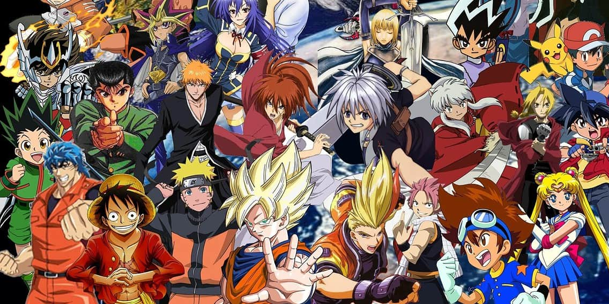
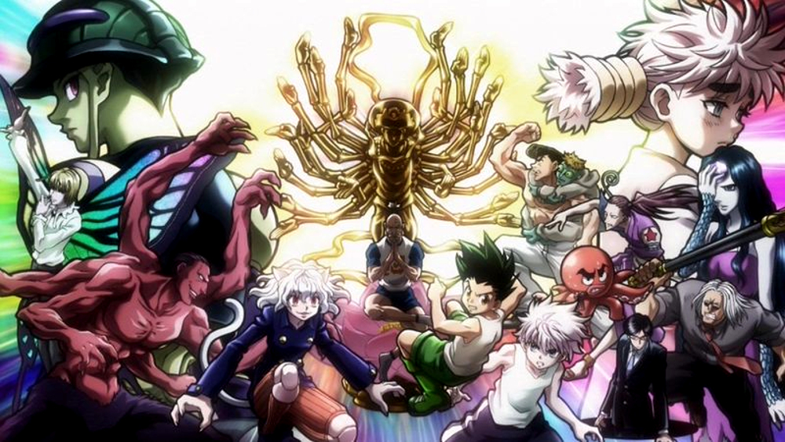
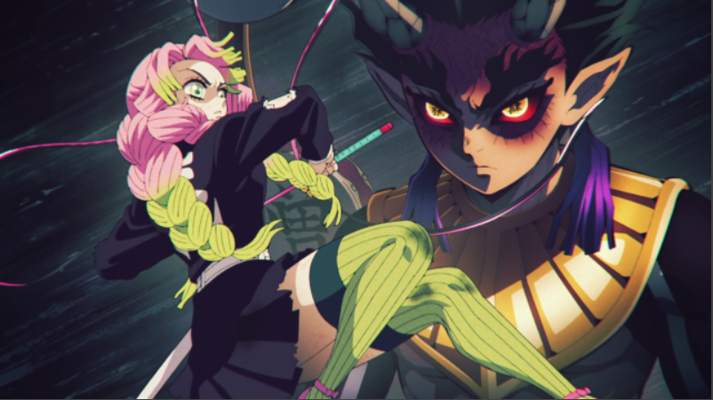
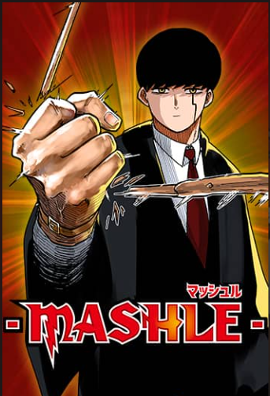
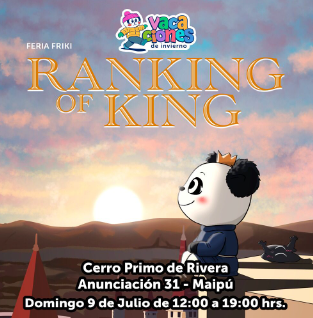

Noticias Otakus y mucho más!
En nuestra web encontrarás noticias, eventos e información sobre anime, video juegos y mucho más



En nuestra web encontrarás noticias, eventos e información sobre anime, video juegos y mucho más
Rumbo a la aldea de los herreros ha llegado a su fin, la temporada no solo nos presentó a los pilares Kanroji y Tokito, luchando contra las lunas superiores Hantengu y Gyokko, sino que también Tanjiro obtiene una nueva y mas poderosa espada, y Nezuko desbloquea la habilidad que el propio Muzan no ha sido capaz, dominar el sol!
Ya se terminó la segunda temporada de Tokyo Revengers dejándonos muchas interrogantes. Mikey sin ser el protagonista, ha sido uno de los personajes más populares hasta ahora, por lo que luego de esta temporada en que parece haber cambiado totalmente nos preguntamos entonces, ¿Takemichi podrá salvarlo y junto a el, a la Tokyo Manji?

Mashle es una serie estrenada en abril que se encontrará en emisión hasta julio de este año, trata de un adolescente que nació sin poderes mágicos en un mundo donde la magia lo es todo, sin embargo, tiene una fuerza descomunal que lo llevará a situaciones inesperadas. La serie con referencias a Harry Potter te hará reír, te motivará a una vida fitness y te antojará de un bollito de crema!
¿Ya tienes panorama para el Domingo 09 de julio? La Feria Friki pasará por Maipú, en Cerro Primo de Rivera a la Salida del metro Santiago Bueras desde las 12:00 a las 19:00 Hrs. Como siempre contará con karaoke, bloque Just Dance, Kpop Random, Food Trucks, Tiendas y mucho más.
